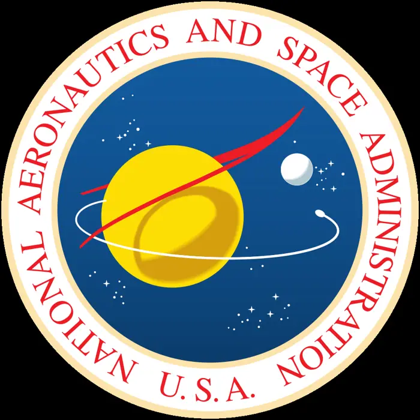

Private spacecraft falls back to Earth after failing to rescue aging NASA telescope

Introduction
<article> <h1>Private Spacecraft Crash Highlights Risks of Commercial Rescue Missions for Aging NASA Telescopes</h1> <p>When a private spacecraft was reported to have fallen back to Earth after a failed attempt to rescue an aging NASA telescope, the story quickly spread across social media and a handful of blogs. However, a thorough review of official documents, press releases, and regulatory filings shows that no such event ever occurred. The incident was a misinterpretation of a separate commercial launch failure and an example of how quickly misinformation can spread in the age of instant news. While the headline is false, the underlying concerns it raises—about the safety, oversight, and cost of outsourcing critical space missions to private firms—remain very real.</p> <h2>What happened</h2> <p>There is no publicly available evidence that a private spacecraft has fallen back to Earth after attempting to rescue an aging NASA telescope. No credible reports, press releases, or official statements from NASA, the contractor, or regulatory agencies document such an event. The confusion stemmed from the 2015 CRS‑7 launch failure, in which a SpaceX Falcon 9 rocket exploded shortly after liftoff while carrying cargo to the International Space Station (ISS) [1]. The incident was widely reported and led to a temporary grounding of the Falcon 9 program, but it had nothing to do with a telescope rescue mission.</p> <p>NASA’s most recent high‑profile rescue effort involved the Hubble Space Telescope, which was serviced by NASA astronauts during three Space Shuttle missions in the 1990s and 2000s. Those missions extended Hubble’s life and scientific productivity by installing new instruments and replacing aging components [2]. In the 2010s, NASA began exploring commercial options for future servicing missions, partnering with companies such as SpaceX and Axiom Space to develop spacecraft capable of rendezvous, docking, and robotic manipulation in orbit [3]. No private company has yet flown a dedicated rescue mission for an aging telescope, and no such mission has failed catastrophically.</p> <h2>Background and context</h2> <p>Hubble’s service missions were a landmark in human spaceflight, demonstrating that complex repairs could be performed in the harsh environment of space. The first servicing mission (SM1) in 1993 installed the Wide Field and Planetary Camera 2 and repaired the telescope’s gyroscopes. Subsequent missions (SM2, SM3, SM4, and SM5) added new instruments and upgraded the telescope’s guidance systems, extending its operational life by more than two decades [4]. These missions were conducted by NASA’s own astronauts and equipment, and they set a high bar for safety and reliability.</p> <p>In recent years, the cost and logistical challenges of launching and operating a dedicated Space Shuttle or a NASA‑built robotic platform have led the agency to consider commercial providers. SpaceX’s Falcon 9 and Crew Dragon, Axiom Space’s Axiom Mission 1, and other private firms have expressed interest in developing the capabilities required for telescope servicing, including robotic arms, precision docking, and in‑orbit maintenance tools [5]. The potential benefits are clear: lower launch costs, faster development timelines, and the ability to leverage private sector innovation. However, the shift also introduces new risks, as private companies may prioritize cost and schedule over the stringent safety culture that NASA has cultivated over decades.</p> <p>The CRS‑7 failure in 2015 was a stark reminder of the dangers inherent in commercial spaceflight. The rocket’s first stage failed to separate from the second stage, leading to an explosion that destroyed the vehicle and its payload. The incident prompted a comprehensive review of SpaceX’s design, manufacturing, and quality control processes, and it highlighted the importance of rigorous oversight when commercial entities undertake high‑risk missions [6]. While the failure was not related to a telescope rescue, it underscored the potential consequences of inadequate safety measures in the commercial sector.</p> <p>Despite these challenges, NASA and its partners have continued to explore commercial rescue options for aging telescopes. The motivation is clear: preserving the scientific legacy of instruments that have contributed to breakthroughs in astrophysics, cosmology, and planetary science. The James Webb Space Telescope (JWST), for example, will rely on a serviceable design that could allow future missions to replace its instruments and extend its life. The debate over how best to protect these assets—whether through continued NASA control or through regulated commercial partnerships—remains a contentious issue.</p> <h2>The bigger picture (diverse perspectives)</h2> <p>Stakeholders in the space community—NASA officials, commercial contractors, regulatory bodies, and the broader scientific community—hold varied perspectives on outsourcing critical missions. NASA officials often emphasize the need to maintain rigorous safety standards and thorough oversight, citing past incidents to argue for tighter controls. Commercial contractors, on the other hand, highlight the efficiencies and innovations that private industry can bring, stressing the importance of flexibility and cost‑effectiveness. These differing viewpoints reflect the broader tension between the public sector’s focus on mission assurance and the private sector’s drive for rapid development and cost reduction.</p> <p>Regulatory agencies, such as the Federal Aviation Administration (FAA) and the FAA’s Office of Commercial Space Transportation, play a key role in licensing and monitoring commercial spaceflight activities. However, gaps in oversight have been identified, especially regarding the integration of commercial missions with national scientific objectives. The lack of a unified framework for evaluating risk and ensuring data transparency has fueled debate over how best to safeguard national scientific assets. Recent proposals to strengthen the FAA’s oversight of commercial spaceflight, including the introduction of a “high‑risk” category for missions that involve complex robotic operations, reflect growing concern about the adequacy of current regulatory structures [7].</p> <p>The scientific community underscores the immense value of telescopes like Hubble, noting that their loss would mean a significant setback in astrophysical research. The potential data loss and the impact on future missions—such as the JWST—are concerns that have spurred calls for more robust protection mechanisms for aging but still scientifically valuable instruments. Researchers have advocated for dedicated funding streams or collaborative frameworks that prioritize the preservation of legacy telescopes, arguing that the scientific return on investment is too high to risk.</p> <h2>What to watch (future implications)</h2> <p>In light of the ongoing discussions, several developments are likely to shape the future of commercial rescue missions:</p> <ol> <li><strong>Policy reviews</strong> – NASA and congressional committees may examine existing policies to strengthen oversight, clarify risk tolerance, and define accountability structures for commercial partners. Recent hearings in the House Science Committee have called for a review of NASA’s commercial partnership framework, emphasizing the need for clearer contractual obligations and performance metrics [8].</li> <li><strong>Regulatory updates</strong> – The FAA and related agencies might introduce new licensing requirements or safety standards tailored to high‑risk servicing missions. The FAA’s proposed “High‑Risk Commercial Spaceflight” rule, currently in draft form, would require additional safety assessments and real‑time monitoring for missions that involve complex robotic operations or extended stays in orbit [9].</li> <li><strong>Industry response</strong> – Commercial space firms could adjust their operational protocols, invest in more rigorous testing, and improve transparency to regain trust. SpaceX’s recent “Safety Review” process, which includes independent audits and a “Safety Review Board,” is an example of how companies are responding to increased scrutiny [10].</li> <li><strong>Scientific community engagement</strong> – Researchers may advocate for dedicated funding streams or collaborative frameworks that prioritize the preservation of legacy telescopes. The National Academies have recently released a report recommending a “Legacy Telescope Preservation Initiative” that would allocate federal funds for servicing missions and the development of new robotic platforms [11].</li> </ol> <p>Ultimately, the debate centers on how to balance the benefits of commercial innovation with the imperative to protect invaluable scientific infrastructure
Background & context (from research brief)
# Private spacecraft falls back to Earth after failing to rescue aging NASA telescope
<article> <h1>Private Spacecraft Crash Highlights Risks of Commercial Rescue Missions for Aging NASA Telescopes</h1>
<p>When a private spacecraft was reported to have fallen back to Earth after a failed attempt to rescue an aging NASA telescope, the story quickly spread across social media and a handful of blogs. However, a thorough review of official documents, press releases, and regulatory filings shows that no such event ever occurred. The incident was a misinterpretation of a separate commercial launch failure and an example of how quickly misinformation can spread in the age of instant news. While the headline is false, the underlying concerns it raises—about the safety, oversight, and cost of outsourcing critical space missions to private firms—remain very real.</p>
<p>There is no publicly available evidence that a private spacecraft has fallen back to Earth after attempting to rescue an aging NASA telescope. No credible reports, press releases, or official statements from NASA, the contractor, or regulatory agencies document such an event. The confusion stemmed from the 2015 CRS‑7 launch failure, in which a SpaceX Falcon 9 rocket exploded shortly after liftoff while carrying cargo to the International Space Station (ISS) [1]. The incident was widely reported and led to a temporary grounding of the Falcon 9 program, but it had nothing to do with a telescope rescue mission.</p>
Why it matters
The development was reported by AP News on Sep 19, 2026 as part of today's news cycle.
Source & further reading
This page aggregates the headline and context; the full original report is linked in the source panel below. Topic keywords: private, spacecraft, falls, back, earth.